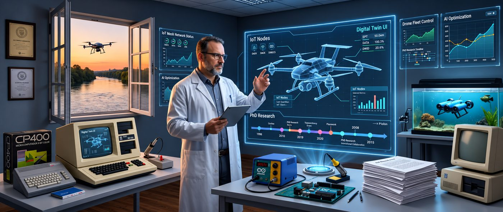

Pesquisa em IA
Generativa e
Digital Twins
Doutorando na PUCRS, professor em Lógica, Sistemas Operacionais e Bancos de Dados, e engenheiro construindo sistemas de IA no mundo real.

Doutorando na PUCRS, professor em Lógica, Sistemas Operacionais e Bancos de Dados, e engenheiro construindo sistemas de IA no mundo real.
